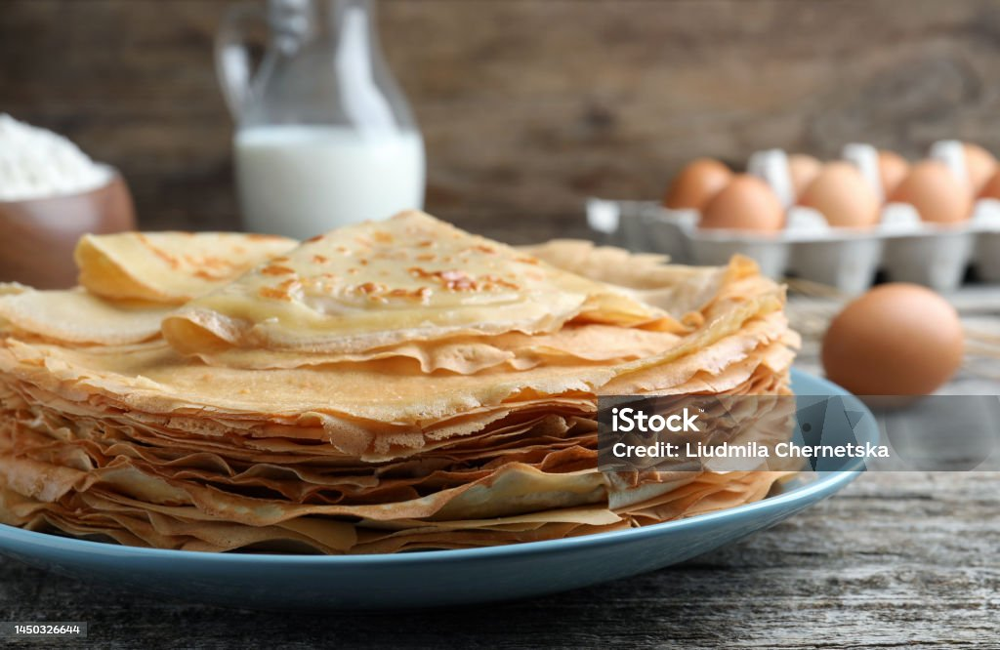

My Recipe

The Best Way to Make Sweet Crepes!
This recipe of Crepes is from a very old cook book that my family owns. The recipe from the book is actually for savory crepes,
but my family likes sweets very much, so we changed it and added ingredients to make sweet crepes. My younger brother uses this
recipe and makes crepes almost every Saturday for our family. They're scrumptious, mouthwatering, tasty, fantastic, I could go on!
My mom said. This goes to show you how delicious these crepes can be! They are a little difficult to master, so you'll want to make them
a few times before declaring you know how to cook them. However, once you reach this title, your crepes will be a delicacy! Have fun
cooking!
Tips
- Check to see when the bottom of the crepe bubbles to tell when you need to flip it.
- Eat them fresh and right after you make them, as they taste way better fresh.
- The amount of extract used really varies on tase, so you might want to switch it with vanilla or don't use it at all if you are
not a fan. It is purely to add an extra flavor to the clips.
Ingredients
| Ingredient |
Amount |
| All purpose flour |
2 cups |
| Granulated sugar |
1/2 cups |
| Almond Extract |
1 Tablespoon |
| Milk |
2 1/2 cups |
| Eggs |
2 |
| Melted and cooled butter(plus more for cooking) |
Butter |
Instructions
- Combine the flour, salt, sugar, and milk and beat until smooth. Beat or blend in the eggs
and stir in the melted and cooled butter, then mix in the almond extract. Refrigerate
mix for an hour then beat again
- Place small non-stick skillet with shadow sides, over medium heat. When a drop of water
skitters across the surface before evaporating, add 1/2 teaspoon of butter.
- Ladle about1/3 cups of batter into the skillet and swirl it around so that it forms a thin layer on
the bottom of the pan. Pour excess batter back into the bowl or container.
- The Batter will dry before your eyes; when the top is no longer liquid, less then a minute, turn the
crepe with a spatula and cook the other side for about 15 seconds. The crepe should brown slightly
and not become at all crisp.
- Repeat the process, adding butter to the skillet and adjusting the heat as needed. Stack the finished
crepes on a plate for serving.
- If you would like, you can add fillings to the crepe, like powdered sugor or cinnamon, and roll the
crepe up around it.
- Enjoy!
Preparation time: about 30 minutes, plus an hour in the refrigerator; Makes 20-30 crepes, 6-10 servings